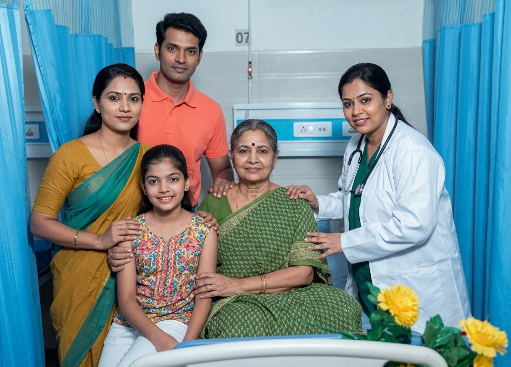

★★★★★
01Geriatric care experience
We needed daytime support for my mother. The caregiver was respectful, patient and careful with her routine. It made us feel less worried while managing work.
Priya R.Chennai
Real-world style testimonials focused on recovery, elder care and peace of mind for Chennai families.

We needed daytime support for my mother. The caregiver was respectful, patient and careful with her routine. It made us feel less worried while managing work.
After surgery, my father needed dressing and movement support. The service was calm and reliable, and the family updates helped us stay confident.
The therapist encouraged my father without rushing him. Slowly he started walking better inside the house. Every session felt patient and positive, which helped his recovery.
The nurse was punctual and explained the care routine clearly. That gave our family confidence during a difficult week.
They understood that home care needs patience. The communication was simple and the caregiver handled things gently.
We contacted them through WhatsApp and got clear guidance quickly. The process felt professional from the start.